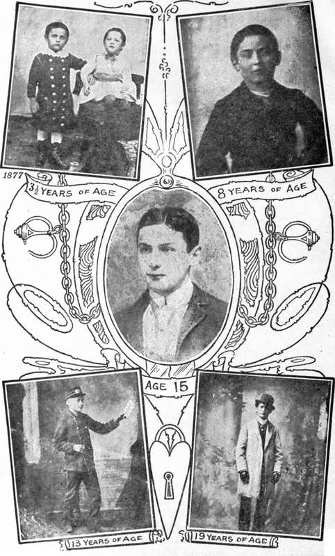

Adventurous Life Of A Versatile Artist. Continued
Description
This section is from the book "The Adventurous Life Of A Versatile Artist: Houdini", by Harry Houdini. Also available from Amazon: The Adventurous Life of a Versatile Artist; Houdini.
Adventurous Life Of A Versatile Artist. Continued
Then came the full turning-point in his career when he looked for greater worlds to conquer, and began the mastery of handcuffs, leg irons, shackles, etc. Of course, proficiency came with practice in secret, and then the public was permitted to witness the efforts of the young wizard.
Houdini went to England without an engagement. He went to Mr. Slater, manager of the Alhambra, London, gave several trial shows, got a contract for two weeks, then one for six months at £60 a week.
Houdini At Different Ages Of His Career.
Since then he has been a top-of-the-bill star everywhere. He has made enormous salaries on the continent, where he is tremendously popular. He has broken records for paid admissions all over Continental Europe. In the week he performed before the Grand Duke of Russia he earned in public and private performances over £400, an enormous salary in those days.
In 1905, he returned to America for a brief tour, and he became at once the sensation in every city. Jails have fallen before his power like cities in the olden time before the armies of Caesar. The police of America join the gendarmerie of Europe in declaring, "Nothing on earth can hold him a prisoner." All the strongest cells and prisons in the United States have succumbed to the mysteriously potent force he exerts. Perhaps his most historic feat was his escape in January, 1906, from Cell 2, Condemned Murderers' Row, in the United States Jail at Washington, D. C, the very cell in which Guiteau, the assassin of President Garfield was confined until he was led forth to be hanged. Another great work was his escape from double confinements in the Boston Tombs at Boston, Mass. March 20, 1906.
Since 1908 Houdini has dropped handcuffs, and has made his performance replete with new mysteries, introducing his original invention-escaping out of an air-tight galvanized iron can filled with water, after it has been locked into an iron bound chest, and the intricate inexplicable escape from the Water Torture Cell, and releasing himself from a regulation strait jacket in full view of the audience, and during the week accepting various challenges.
Any reader of this who wishes to challenge Houdini, or has any novel method of securing Houdini, must write to publicly advertise address and name of Challenger or Challengers. Nc Challenge can be accepted for same date on which it is sent
Instead of remaining in America six months as his original contract stipulated, he was the sensation of show business from his opening 1905, until his departure for Germany, August 1908.
His leap from the Frederichstrasse Bridge, in Berlin, Germany, heavily manacled, September 5th, 1908; his daring plunge into the Weser, Bremen, having to break through ice.
The Great White Way: New York.
Paris, from the roof of the gruesome Morgue, April 7th, 1909, brought record houses at the Circus Busch, Berlin, and Alham-bra Theatre, Paris, causing his imitators to try and duplicate his feats. Two were fortunately saved from a watery grave, Alburtus, in Atlantic City, being saved by the life-saving guard, Menkis was brought up in an unconscious state, and Ricardo jumped handcuffed from the Luippold Bridge, Land-shut, Bavaria, April 14th, 1909, and was drowned.
Cold waters have no terrors for Houdini, as he dived manacled into the Mersey River, Liverpool, December 7th, 1908, also in the Egbaston Reservoir, Birmingham, December 15th, 1908. In all dives Houdini makes use of the regulation police handcuffs, chains, and leg irons.
Houdini returned to America again in 1914, just before the World War, toured the country, appearing for two seasons at the World's biggest Theatre, the New York Hippodrome, the first season presenting his inventions, The Vanishing Elephant, in which he caused an elephant named "Jennie" to vanish, who weighed over ten thousand pounds, and said to be a daughter of the beloved Barnum's "Jumbo," and in the second half of the Hippodrome show, performing the Submarine Box feat, escaping from same whilst under water, and the box being entirely filled with water.
Second season, introducing the Escape from Strait Jacket, suspended sixty feet in mid-air, hanging by his ankles, and presenting for the first time on any stage another of his inventions, The Whirlwind of Colors, in which he produced hundreds of yards of silks, giant flags, and for a finish the only tame American Eagle of this decade. It is known that Old Abe was a tame eagle, used by the Union soldiers as a mascot, but this Young Abe, trained by Houdini is the only one known that any one could handle.
Houdini gave his services to the Government, giving performances in the camps, for two consecutive years, not accepting engagements, and is proud of the fact of having sold over two million dollars worth of liberty bonds.
The years of 1918, 1920 and 1921 he became a Cinema star, recognizing the fact that Dame Nature would demand her due, and that the future generations would not believe that any man could perform the feats with which he is credited. So he originally went into a company to produce a 15 episode serial, "The Master Mystery," making such a sensational success that Mr. Jesse L. Lasky engaged him for a feature picture, "The Grim Game/' and before this was released, Mr. Lasky re-engaged Houdini for a second picture, "Terror Island." Both features were the sensations of the year.
To fulfill contracts made eight years before Houdini, in January, 1920, returned to England for a tour of the principal music halls. So great was his success that even his former triumphs were eclipsed. Throngs followed him.whenever he appeared on the streets of the provincial towns of Great Britain. He broke house record after house record, drawing such box office returns that the Moss Empires management waived its right to hold him to the figure named in the eight year old contract and voluntarily doubled his salary.
Upon his return to America Houdini organized his own film producing company of which more will be told in subsequent pages.
Continue to:
- prev: Houdini: The Adventurous Life Of A Versatile Artist
- Table of Contents
- next: Official Police News From Germany
Tags
magic, escapology, Houdini, wizard, escape artist, lock, handcuff